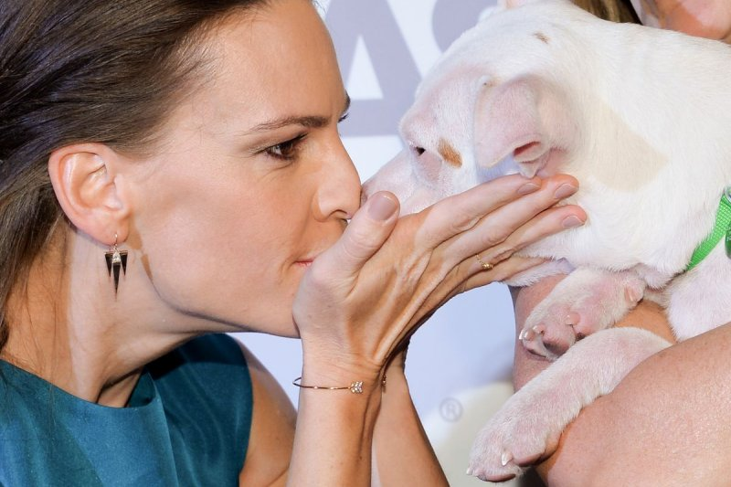

iPets
關於我們
狗狗科普
人與狗的關係
聯繫我們
登入/註冊
Search
跟狗說或有助於增加感情
飼主跟自家小狗「聊天」的行為並不會對牛彈琴，實際效果和人類與嬰兒講話有異曲同工之妙，只要妥善利用高頻且帶有情感的聲調向狗狗交談，就會對人犬關係有很大的改善。

跟狗說或有助於增加感情
飼主跟自家小狗「聊天」的行為並不會對牛彈琴，實際效果和人類與嬰兒講話有異曲同工之妙，只要妥善利用高頻且帶有情感的聲調向狗狗交談，就會對人犬關係有很大的改善。
跟狗說或有助於增加感情
飼主跟自家小狗「聊天」的行為並不會對牛彈琴，實際效果和人類與嬰兒講話有異曲同工之妙，只要妥善利用高頻且帶有情感的聲調向狗狗交談，就會對人犬關係有很大的改善。
© 台北商業大學 資訊管理系 版權所有